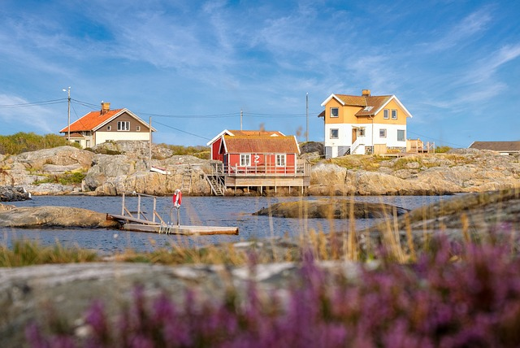

Pemandangan Swedia
Diposting pada tanggal 14.00 WIB,09 oktober 2023
Alasan mengapa swiss sangat indah
Swiss dianggap sebagai tujuan wisata yang indah karena berbagai alasan, seperti yang disoroti dalam sumber berikut:
1.Keindahan Alam yang Spektakuler: Swiss menawarkan pemandangan alam yang menakjubkan, termasuk danau yang masih asli, pegunungan yang megah seperti Pegunungan Alpen Swiss, dan lembah yang indah. Pemandangan alam negara ini yang menakjubkan menjadi daya tarik utama bagi wisatawan.
2. Desa Menawan: Swiss terkenal dengan desa-desanya yang menawan dan indah. Desa-desa ini seringkali terpelihara dengan baik, menampilkan arsitektur tradisional Swiss dan suasana yang tenang, menjadikannya tujuan wisata yang menarik bagi wisatawan.
3. Lingkungan Bersih dan Terpelihara: Swiss terkenal dengan komitmennya terhadap pelestarian dan kebersihan lingkungan. Bentang alam negara ini yang masih asli, hutan yang terpelihara dengan baik, dan danau yang jernih menjadikannya tujuan ideal bagi para pecinta alam.
4. Negeri Ajaib Musim Dingin: Selama musim dingin, Swiss berubah menjadi negeri ajaib musim dingin, menarik pengunjung dengan aktivitas seperti bermain ski dan seluncur salju di resor kelas dunia. Pegunungan Alpen Swiss menawarkan beberapa peluang olahraga musim dingin terbaik di dunia.
Faktor-faktor ini secara kolektif menjadikan Swiss tujuan yang menarik dan mempesona bagi wisatawan yang mencari keindahan alam, pesona budaya, dan pengalaman yang tak terlupakan.